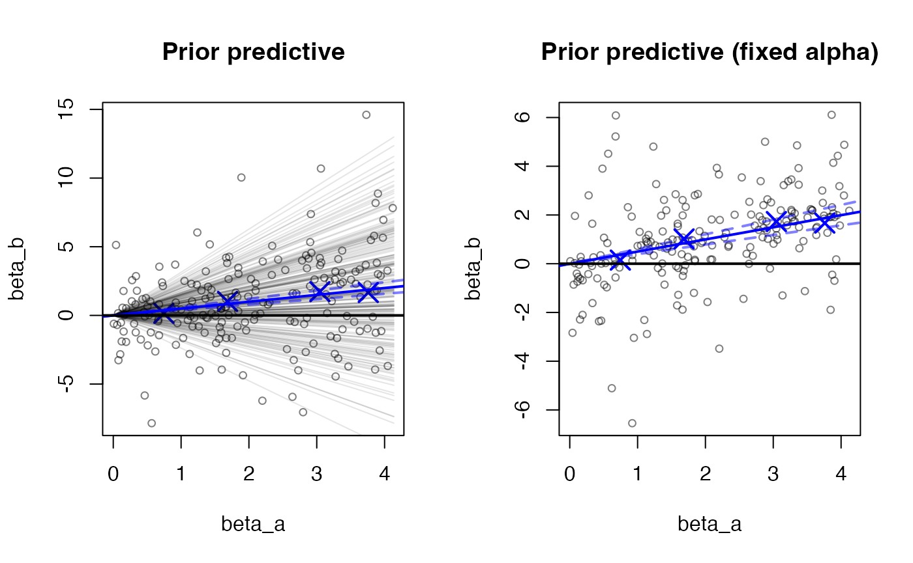

MRLocus - estimation of gene-to-trait effects
Anqi Zhu, Nana Matoba, Jason Stein, Michael Love
08/30/2022
Source:vignettes/mrlocus.Rmd
mrlocus.RmdAbstract
MRLocus provides estimation of gene-to-trait effects from eQTL and GWAS summary statistics, for loci with allelic heterogeneity: multiple nearly-LD-independent signal clusters representing distinct eQTLs. Evidence is aggregated across signal clusters for mediation of the downstream GWAS trait through the gene. MRLocus package version: 0.0.24
Introduction
MRLocus provides Bayesian analysis of gene-to-trait mediation effects, making use of the Stan and RStan software packages for inference (Carpenter et al. 2017; Stan Development Team 2020).
The authors of the associated MRLocus manuscript (Zhu et al. 2021) are:
Anqi Zhu*, Nana Matoba*, Emma P. Wilson, Amanda L. Tapia, Yun Li, Joseph G. Ibrahim, Jason L. Stein, Michael I. Love
* Both authors contributed equally to this work.
Data input and preprocessing
In this vignette we demonstrate use of MRLocus on simulated summary statistics. The simulated data in this vignette does not include the steps of importing summary statistics and LD matrices from external files. For that, we recommend looking at the R code we used for analysis of the public datasets in the manuscript, and see also the basic data input information in the README (also shown on the MRLocus homepage).
Briefly, three important helper functions for import and preprocessing that are provided in this package are collapseHighCorSNPs, flipAllelesAndGather, and trimClusters, for importing summary statistics across nearly-LD-independent signal clusters (sets of SNPs that are non-overlapping and have low correlation in a reference population). We use the phrase “LD-independent signal cluster” as in the PTWAS software and paper (Zhang et al. 2019).
It is strongly recommended to use these three functions for data import, in particular as the first function will reduce the number of SNPs per cluster and help deal with identifiability issues during the Bayesian colocalization step. As described in the manuscript, MRLocus does not attempt to resolve putative causal SNPs among sets of SNPs with correlation \(> 0.95\), but instead it collapses this redundancy using collapseHighCorSNPs. The second function ensures that the alleles are flipped properly across eQTL and GWAS datasets (the function will handle this to avoid manual processing by the user), such that the alleles are coded in such a way that the downstream statistical modeling functions will expect. The second function ensures that both studies refer to the same allele, which is the expression-increasing allele for an index SNP within each nearly-LD-independent signal cluster. Finally, the last function is used to ensure that the candidate instruments have \(r^2\) values below a specified threshold (so that they are satisfying the “nearly-LD-independent” description).
We recommend using PLINK (Purcell et al. 2007) for generation of signal clusters (see Methods section of MRLocus manuscript). We have used raw p-value thresholds from eQTL in order to cull lists of signal clusters (instruments) which have an effect on the putative mediator (gene expression). Note that we do not recommend running MRLocus on loci with only one signal cluster, i.e. loci lacking allelic heterogeneity. The fitSlope function will provide a warning if such input data is provided. The estimation of the slope is impaired with a single signal cluster, and estimation of the dispersion across signal clusters is not possible.
We have not yet implemented, but plan on providing an import function from the TwoSampleMR package.
Un-evaluated example code for the two preprocessing functions follows. In the first function the arguments are:
-
sum_stat- list of summary statistics over signal clusters -
ld_mat- list of LD matrices over signal clusters - optionally,
ld_mat2can also be provided for analyses with two populations
# (un-evaluated chunk)
data1 <- collapseHighCorSNPs(sum_stat, ld_mat)The second function takes the output of the first function, and additionally a number of column names. E.g. this function call implies that we have column names ref_eqtl, effect_eqtl, beta_eqtl, se_eqtl, etc. See the function man page for more details. If the column names are of the form eqtl_beta, eqtl_se, etc. such that the A/B study specification is first in the column names, the user should then set ab_last=FALSE.
# (un-evaluated chunk)
data2 <- flipAllelesAndGather(data1$sum_stat, data1$ld_mat,
a="eqtl", b="gwas",
ref="ref", eff="effect",
beta="beta", se="se",
a2_plink="major_plink",
snp_id="SNP", sep="_")In order to inspect whether allele flipping worked as expected, this function will by default make a plot of the initial estimates, or you can manually run plotInitEstimates on the output of this function. In the next section an evaluation of this plot is discussed.
The third helper function, trimClusters, can be run after extractForSlope (this occurs after colocalization).
QC of input pre-colocalization
The following simulated summary statistics are generated from a multivariate normal distribution, similar to the model used in eCAVIAR (Hormozdiari et al. 2016). In contrast, the simulations in the MRLocus manuscript make use of the twas_sim framework (Mancuso 2020).
library(mrlocus)
set.seed(1)
data <- makeSimDataForMrlocus()This simulated data consists of a list of lists. The elements are: beta_hat_a, beta_hat_b, se_a, se_b, Sigma_a, Sigma_b, and alleles, which provide the estimated coefficients, standard errors (SE), and LD matrices for the two studies, A and B (typically, eQTL and GWAS), as well as a data.frame with allele information (SNP ID, reference allele, and effect allele). The LD matrices can be identical if distinct matrices for each study are not available. Each element itself should be a list of vectors/matrices/data.frames across nearly-LD-independent signal clusters.
We can make a simple plot of the beta_hat’s, estimated coefficients from A and B. The coefficients are numbered by the SNP order within each signal cluster.
plotInitEstimates(data)Evaluating this plot: The input data for colocalization, e.g. after running collapseHighCorSNPs and flipAllelesAndGather on real eQTL and GWAS summary statistics within PLINK clumps, is typically not more than 20-30 SNPs per clusters, and with a certain pattern of effect sizes within each cluster. You would not expect to have SNPs within a cluster having very discordant effects size in the x- or y-direction, and quality control of the allele coding is important for the colocalization step to give reasonable results. It is fine however for their to be discordant effect sizes in the y-direction across clusters, this is important evidence against a consistent mediation effect.
Colocalization step with MRLocus
The first step in MRLocus is to perform colocalization of the studies. To do so, we loop over the signal clusters, and store the fitted models in a list called fit.
## [1] 7 8 9 10The following code chunk loops over signal clusters:
options(mc.cores=2)
for (j in 1:nclust) {
coloc_fit[[j]] <- with(data,
fitBetaColoc(
beta_hat_a = beta_hat_a[[j]],
beta_hat_b = beta_hat_b[[j]],
se_a = se_a[[j]],
se_b = se_b[[j]],
Sigma_a = Sigma_a[[j]],
Sigma_b = Sigma_b[[j]]
))
}We now create a list containing the posterior mean from the colocalization step, and the original SE values. Note the SE values are now referred to as sd. We can extract the list of e.g. beta_hat_a using lapply and the [[ extractor as seen below:
Colocalization with eCAVIAR (optional alternative)
Alternatively, MRLocus can accept colocalization results from eCAVIAR (Hormozdiari et al. 2016) as input to the slope fitting step. eCAVIAR is run with default options on each nearly-LD-independent signal cluster separately, supplying the LD matrix, and z-scores for study A and B, and -c 1, i.e. setting the maximum number of causal SNPs to 1.
For eCAVIAR colocalization, the SNP with the largest colocalization posterior probability (CLPP) is selected from each signal cluster, among those SNPs which are valid instruments, i.e. with an absolute value of z-score as large as the value used for PLINK clumping (Purcell et al. 2007). eCAVIAR alleles are flipped such that the alternate allele is the one corresponding to an increase in the measured phenotype in A (e.g. gene expression).
Slope fitting step
Following MRLocus colocalization, the following function, extractForSlope, extracts one SNP per signal cluster with the largest posterior mean for the coefficient for study A (e.g. eQTL). For eCAVIAR colocalization, a simple R script can be used to select the SNP with largest CLPP per nearly-LD-independent signal cluster, and to pass the estimated coefficients and SEs for A and B as vectors in a named list to fitSlope (see man page for details on data input, and the below code chunk for an example of the structure of the input).
The selected SNPs and their posterior mean values are plotted on the right panel in blue. We note that it is also possible to perform EM-based clustering (Scrucca et al. 2016) to extract more than one SNP per signal cluster, through use of the niter argument, although this was not evaluated in the MRLocus manuscript.
res <- extractForSlope(res)
str(res) # input to fitSlope()## List of 5
## $ beta_hat_a: num [1:4] 0.666 1.867 2.992 3.658
## $ beta_hat_b: num [1:4] 0.0614 0.9814 1.634 1.7517
## $ sd_a : num [1:4] 0.25 0.25 0.25 0.25
## $ sd_b : num [1:4] 0.25 0.25 0.25 0.25
## $ alleles :'data.frame': 4 obs. of 3 variables:
## ..$ id : chr [1:4] "rs256368" "rs308293" "rs510126" "rs374487"
## ..$ ref: chr [1:4] "A" "A" "A" "A"
## ..$ eff: chr [1:4] "T" "T" "T" "T"After running extractForSlope, we recommend to use the helper function trimClusters to ensure that the instruments chosen for slope modeling are nearly LD independent, by specifying an r2_threshold.
Now we are ready to fit the slope. In our testing we have used 10,000 iterations, though fewer may be sufficient. This step is typically much faster than the colocalization step.
res <- fitSlope(res, iter=10000)Examine MRLocus estimates
One of the elements in the results list res is the stanfit object, which can be explored with functions from the rstan package.
The posterior mean for the gene-to-trait slope, alpha, is near the simulated value of 0.5. The posterior mean for the dispersion around the slope, sigma, is also estimated. Note that the estimate for sigma has a large 80% credible interval, as we only have 4 signal clusters over which to estimate dispersion.
suppressPackageStartupMessages(library(rstan))
print(res$stanfit, pars=c("alpha","sigma"), probs=c(.1,.9), digits=3)## Inference for Stan model: slope.
## 4 chains, each with iter=10000; warmup=5000; thin=1;
## post-warmup draws per chain=5000, total post-warmup draws=20000.
##
## mean se_mean sd 10% 90% n_eff Rhat
## alpha 0.503 0.002 0.097 0.404 0.613 2934 1.002
## sigma 0.301 0.006 0.301 0.062 0.634 2588 1.002
##
## Samples were drawn using NUTS(diag_e) at Tue Aug 30 15:34:45 2022.
## For each parameter, n_eff is a crude measure of effective sample size,
## and Rhat is the potential scale reduction factor on split chains (at
## convergence, Rhat=1).MRLocus provides a plot that summarizes the estimation of the gene-to-trait effect. The estimated slope and an 80% credible interval are indicated with a solid blue line and dashed blue lines, respectively. The black points and error bars represent the posterior mean for top SNPs from colocalization and the original SE. An 80% band in light blue indicates a region that is expected to contain 80% of the eQTL-GWAS pairs across signal clusters, so reflecting the allelic heterogeneity. If the estimate of \(\sigma\) is of comparable size to \(\alpha\) times typical eQTL effect sizes (slope \(\times\) location of black points on the x-axis), this indicates a high degree of heterogeneity.
plotMrlocus(res, main="MRLocus gene-to-trait effect estimate")
Prior predictive check
Finally, we have a function which helps to assess the strength of the prior for the slope (alpha) and the dispersion around the fitted line (sigma). We generate a table showing the prior SD for these two parameters and the posterior SD from the fitted model. We note that the prior for both of these parameters is informative by design (so ratios > 0.1 are not a problem per se), but it is not desired that the ratio of posterior to prior SD approach 1.
We additionally generate two plots, the first plot generates parameters from the prior and the model, showing the possible values for alpha, beta_a and beta_b (the true effect sizes from the two studies). In the second plot, alpha is fixed to the prior mean to better visually identify the simulated values for sigma. The blue X’s indicate the fitted estimates of beta_a and beta_b from the colocalization step, and the blue lines indicate the posterior for alpha.
priorCheck(res)
## parameter prior_sd post_sd po_pr_ratio
## 1 alpha 1.002854 0.09732662 0.0970496
## 2 sigma 1.751663 0.30121522 0.1719596The default is for the function to return the small summary table, but by setting type=2, it will alternatively return the prior predictive draws themselves, with the number of draws specified by n (default is 200).
Session info
## R version 4.2.1 (2022-06-23)
## Platform: x86_64-apple-darwin17.0 (64-bit)
## Running under: macOS Big Sur ... 10.16
##
## Matrix products: default
## BLAS: /Library/Frameworks/R.framework/Versions/4.2/Resources/lib/libRblas.0.dylib
## LAPACK: /Library/Frameworks/R.framework/Versions/4.2/Resources/lib/libRlapack.dylib
##
## locale:
## [1] en_US.UTF-8/en_US.UTF-8/en_US.UTF-8/C/en_US.UTF-8/en_US.UTF-8
##
## attached base packages:
## [1] stats graphics grDevices utils datasets methods base
##
## other attached packages:
## [1] rstan_2.21.5 ggplot2_3.3.6 StanHeaders_2.21.0-7
## [4] mrlocus_0.0.24
##
## loaded via a namespace (and not attached):
## [1] Rcpp_1.0.8.3 prettyunits_1.1.1 ps_1.7.1 assertthat_0.2.1
## [5] rprojroot_2.0.3 digest_0.6.29 utf8_1.2.2 R6_2.5.1
## [9] stats4_4.2.1 evaluate_0.15 highr_0.9 pillar_1.7.0
## [13] rlang_1.0.3 callr_3.7.0 jquerylib_0.1.4 rmarkdown_2.14
## [17] pkgdown_2.0.5 textshaping_0.3.6 desc_1.4.1 stringr_1.4.0
## [21] loo_2.5.1 munsell_0.5.0 compiler_4.2.1 xfun_0.31
## [25] pkgconfig_2.0.3 systemfonts_1.0.4 pkgbuild_1.3.1 htmltools_0.5.2
## [29] tidyselect_1.1.2 tibble_3.1.7 gridExtra_2.3 codetools_0.2-18
## [33] matrixStats_0.62.0 fansi_1.0.3 crayon_1.5.1 dplyr_1.0.9
## [37] withr_2.5.0 MASS_7.3-57 grid_4.2.1 jsonlite_1.8.0
## [41] gtable_0.3.0 lifecycle_1.0.1 DBI_1.1.3 magrittr_2.0.3
## [45] scales_1.2.0 RcppParallel_5.1.5 cli_3.3.0 stringi_1.7.6
## [49] cachem_1.0.6 fs_1.5.2 bslib_0.3.1 ellipsis_0.3.2
## [53] ragg_1.2.2 vctrs_0.4.1 generics_0.1.3 tools_4.2.1
## [57] glue_1.6.2 purrr_0.3.4 processx_3.6.1 parallel_4.2.1
## [61] fastmap_1.1.0 yaml_2.3.5 inline_0.3.19 colorspace_2.0-3
## [65] memoise_2.0.1 knitr_1.39 sass_0.4.1